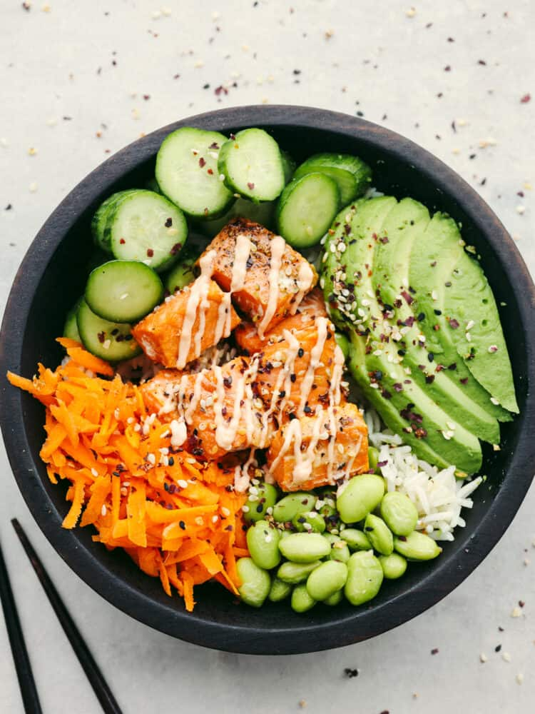

Salmon Bowl

Description
Ingredients
- 4 ounces salmon filet, cut into 1-inch cubes
- 1/2 teaspoon kosher salt
- 1/4 teaspoon pepper
- 1/4 teaspoon onion powder
- 1 cup Cooked Rice, any kind works.
- 1/2 Avocado diced or sliced
- 1/4 cup Carrots, shredded
- 1/4 cup Mini Cucumber
- 1/4 cup Edamame cooked
- 2 tablespoon Mayonnaise
- 2 teaspoon Sriracha
- Sesame Seeds, optional for garnish
Steps
- Preheat the air fryer to 390 degrees Farhenheit. Remove the skin from the salmon filets and cut the salmon into 1 inch cubes.
- Place the cubed salmon in a bowl and season with salt, pepper, and onion powder.
- Place the salmon in the air fryer basket in a single layer and cook for 6-8 minutes, or until the internal temperature has reached 125 degrees Fahrenheit. Feel free to pan fry over medium-high heat in a skillet for the same amount of time if you prefer.
- Place the cooked rice in the bowl first. Layer on the cooked salmon, avocado, cucumber, and edamame.
- Stir together the mayonnaise and sriracha sauce until combined. Drizzle on the soy sauce and garnish with sesame seeds.
Back to overview